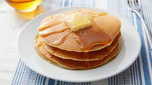

Pancakes

Description
Nothing says "weekend" like homemade pancakes for breakfast.
Our easy recipe will help you whip them up in less than 30 minutes.
Making pancake batter from scratch is so simple that you'll wonder
why you never did it before!
Ingredients
- 1 cup all-purpose flour, (spooned and leveled)
- 2 tablespoons sugar
- 2 teaspoons baking powder
- 1/2 teaspoon salt
- 1 cup milk
- 2 tablespoons unsalted butter, melted, or vegetable oil
- 1 large egg
- 1 tablespoon vegetable oil
- Assorted toppings, such as butter, maple syrup,
confectioners' sugar, honey, jams, preserves, sweetened
whipped cream, or chocolate syrup
Instructions
Pancake Variations